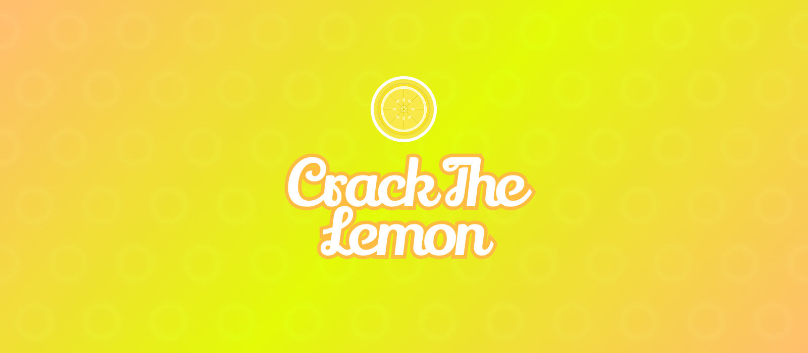
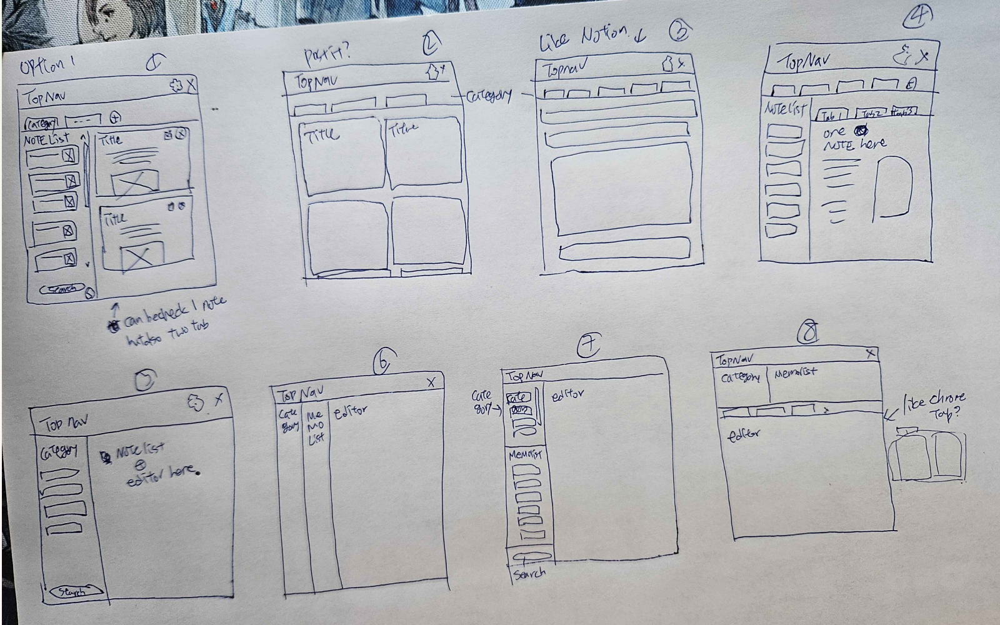
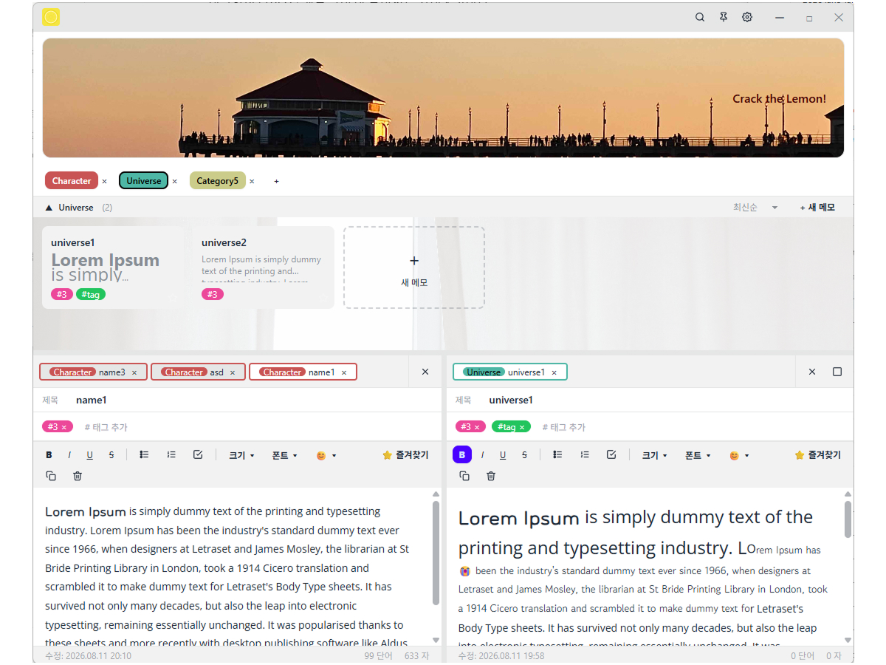
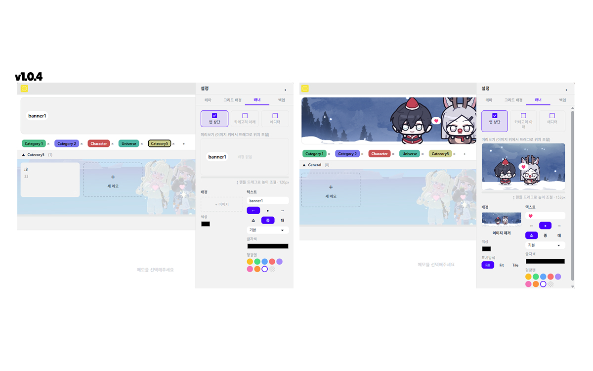
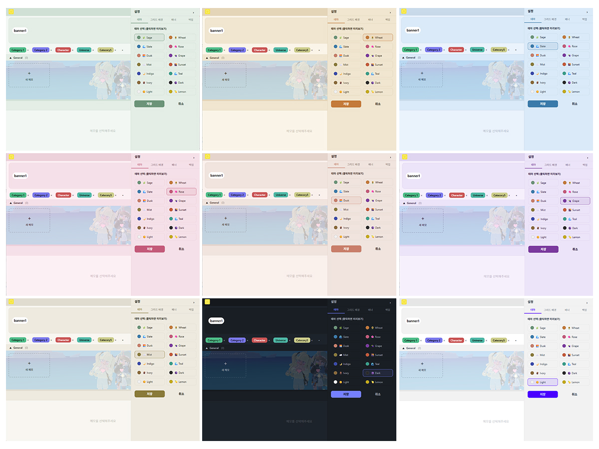
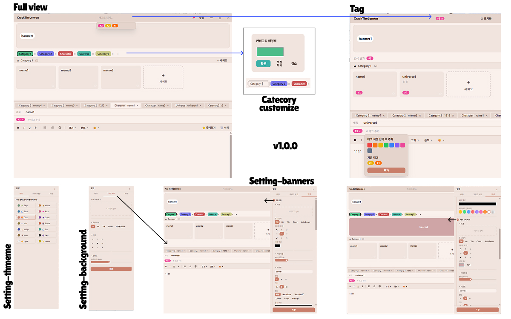
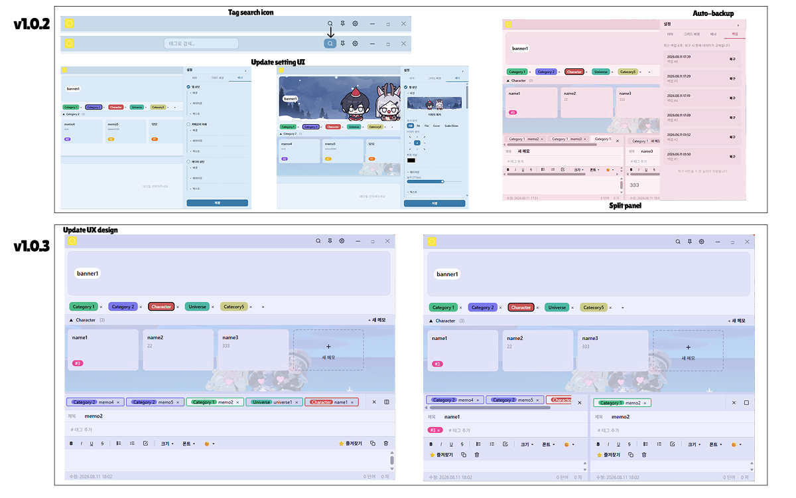
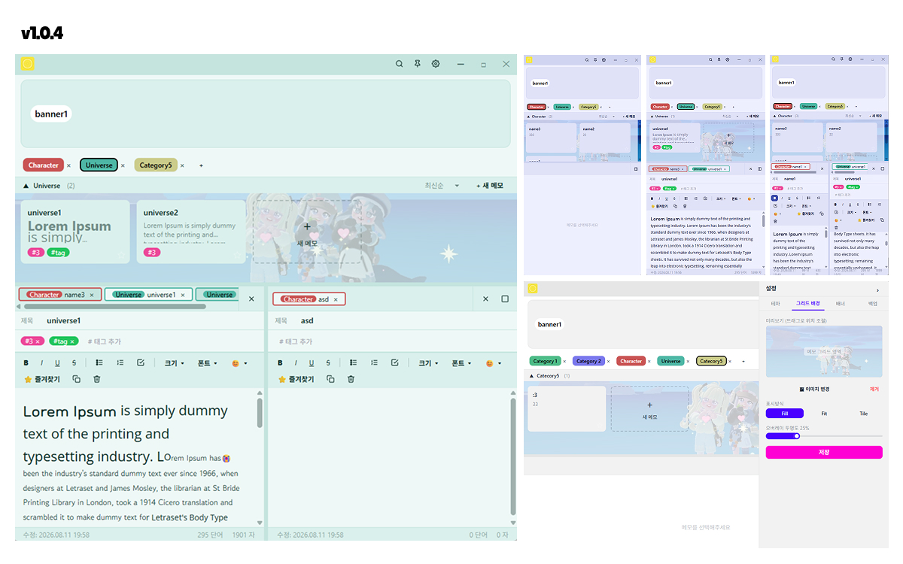

CrackTheLemon is a customizable, category-based memo app built as a birthday gift for a close friend — designed around exactly how they wanted to write and organize their notes, not for a general audience. Built with Electron and React with Claude AI as a development partner, it went through five released versions shaped almost entirely by real, ongoing feedback from its one user.
My friend wanted a memo app they could truly make their own — customizable categories, color coding, tags, and a look they could decorate themselves. So instead of designing for a general audience, I designed for one specific person.
One decision came first: always-on-top on desktop, or synced across devices? Since my friend mainly worked at their desk, we kept it simple — desktop-only.
In a one-hour session, I walked through 8 hand-sketched layout options. Rather than picking one outright, we combined pieces from several — the category sidebar from one, the split editor from another — into a layout that matched exactly what they needed.




CrackTheLemon evolved through a tight feedback loop with its one real user — every version addressed something they'd actually run into.



CrackTheLemon wasn't about building features for "most users" — it was about solving one real person's pain point through design. That shift in scale changed how I approached every decision, and pushed me to grow as a designer in a way that designing for a general audience never had.